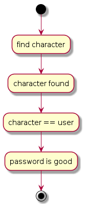
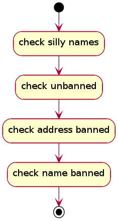
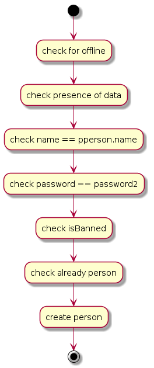

@Path(value="/game") public class GameBean extends java.lang.Object implements RoomsInterface
| Constructor and Description |
|---|
GameBean() |
| Modifier and Type | Method and Description |
|---|---|
protected User |
authenticateWithPassword(java.lang.String name,
java.lang.String password)
This method should be called to verify that the target of a certain
action is a user with the appropriate password.
|
javax.ws.rs.core.Response |
create(javax.servlet.http.HttpServletRequest requestContext,
java.lang.String name,
PrivatePerson pperson)
Creates a new character, suitable for playing.
|
javax.ws.rs.core.Response |
delete(java.lang.String name,
java.lang.String password,
java.lang.String password2)
Deletes a character, permanently.
|
javax.ws.rs.core.Response |
deleteLog(java.lang.String name,
java.lang.String lok)
Removes the log of a player, i.e.
|
Room |
find(java.lang.Integer id)
Returns the room with this specific id.
|
protected javax.persistence.EntityManager |
getEntityManager()
Returns the entity manager of Hibernate/JPA.
|
boolean |
isBanned(java.lang.String name,
java.lang.String address)
Checks to see if a person is banned from playing.
|
java.lang.String |
logon(javax.servlet.http.HttpServletRequest requestContext,
java.lang.String name,
java.lang.String password)
Logs a character in, to start playing.
|
PrivateDisplay |
play(java.lang.String name,
java.lang.String lok,
java.lang.Integer offset,
java.lang.String command,
boolean log)
Main function for executing a command in the game.
|
javax.ws.rs.core.Response |
quit(java.lang.String name,
java.lang.String lok)
Stops a playing character from playing.
|
PrivateLog |
retrieveLog(java.lang.String name,
java.lang.String lok,
java.lang.Integer offset)
Retrieves the log of a player.
|
protected javax.persistence.EntityManager getEntityManager()
protected User authenticateWithPassword(java.lang.String name, java.lang.String password)
This method should be called to verify that the target of a certain action is a user with the appropriate password.

password - real passwordname - the name to identify the personjavax.ws.rs.WebApplicationException - BAD_REQUEST if an unexpected exception
crops up or provided info is really not proper. UNAUTHORIZED if session
passwords do not match or user not found.public boolean isBanned(java.lang.String name,
java.lang.String address)
Checks to see if a person is banned from playing.

name - the name of the personaddress - the ip address the person is playing from@POST
@Path(value="{name}")
@Produces(value={"application/xml","application/json"})
public javax.ws.rs.core.Response create(@Context
javax.servlet.http.HttpServletRequest requestContext,
@PathParam(value="name")
java.lang.String name,
PrivatePerson pperson)
Creates a new character, suitable for playing.

requestContext - for headers, like remote address.name - the name of the userpperson - the data of the new characterjavax.ws.rs.WebApplicationException - BAD_REQUEST if an unexpected exception
crops up or something could not be validated.@DELETE
@Path(value="{name}")
@Produces(value={"application/xml","application/json"})
public javax.ws.rs.core.Response delete(@PathParam(value="name")
java.lang.String name,
@QueryParam(value="password")
java.lang.String password,
@QueryParam(value="password2")
java.lang.String password2)
name - the name of the userpassword - the password of the character to be deletedpassword2 - verification of the password, a second time.javax.ws.rs.WebApplicationException - BAD_REQUEST if an unexpected exception
crops up.@POST
@Path(value="{name}/logon")
@Produces(value={"application/xml","application/json"})
public java.lang.String logon(@Context
javax.servlet.http.HttpServletRequest requestContext,
@PathParam(value="name")
java.lang.String name,
@QueryParam(value="password")
java.lang.String password)
requestContext - password - password for verification of the user.name - the name of the userjavax.ws.rs.WebApplicationException - BAD_REQUEST if an unexpected exception
crops up.@POST
@Path(value="{name}/play")
@Produces(value={"application/xml","application/json"})
public PrivateDisplay play(@PathParam(value="name")
java.lang.String name,
@QueryParam(value="lok")
java.lang.String lok,
@QueryParam(value="offset")
java.lang.Integer offset,
java.lang.String command,
@QueryParam(value="log")
boolean log)
throws MudException
lok - the hash to use for verification of the user, is the lok
setting in the cookie when logged onto the game.name - the name of the usercommand - the command issuedoffset - the offset used for the loglog - indicates with true or false, whether or not we are
interested in the log.javax.ws.rs.WebApplicationException - BAD_REQUEST if an unexpected exception
crops up or something could not be validated.MudException@GET
@Path(value="{name}/log")
@Produces(value={"application/xml","application/json"})
public PrivateLog retrieveLog(@PathParam(value="name")
java.lang.String name,
@QueryParam(value="lok")
java.lang.String lok,
@QueryParam(value="offset")
java.lang.Integer offset)
lok - the hash to use for verification of the user, is the lok
setting in the cookie when logged onto the game.name - the name of the useroffset - the offset from whence to read the logjavax.ws.rs.WebApplicationException - BAD_REQUEST if an unexpected exception
crops up.PrivateLog@DELETE
@Path(value="{name}/log")
@Produces(value={"application/xml","application/json"})
public javax.ws.rs.core.Response deleteLog(@PathParam(value="name")
java.lang.String name,
@QueryParam(value="lok")
java.lang.String lok)
lok - the hash to use for verification of the user, is the lok
setting in the cookie when logged onto the game.name - the name of the userjavax.ws.rs.WebApplicationException - BAD_REQUEST if an unexpected exception
crops up.@GET
@Path(value="{name}/quit")
@Produces(value={"application/xml","application/json"})
public javax.ws.rs.core.Response quit(@PathParam(value="name")
java.lang.String name,
@QueryParam(value="lok")
java.lang.String lok)
lok - the hash to use for verification of the user, is the lok
setting in the cookie when logged onto the game.name - the name of the userjavax.ws.rs.WebApplicationException - BAD_REQUEST if an unexpected exception
crops up.public Room find(java.lang.Integer id)
RoomsInterfacefind in interface RoomsInterfaceid - the id of the room